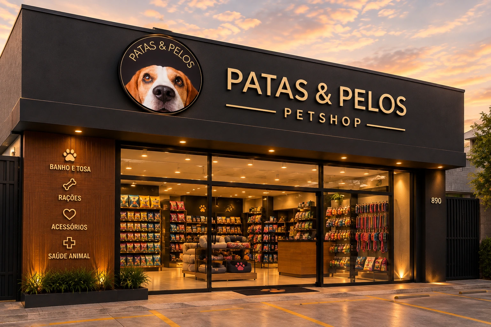

Unidade Centro
Na Unidade Centro, você encontra cuidados para o seu pet e produtos para o dia a dia. Uma opção prática para quem circula pela região central e deseja agendar serviços de banho e tosa.
Agendar serviçoUnidade Sul
A Unidade Sul oferece um espaço dedicado ao bem-estar dos animais, com atendimento voltado às necessidades dos tutores da região. Conheça nossos serviços e agende um horário para cuidar do seu pet.
Agendar serviço